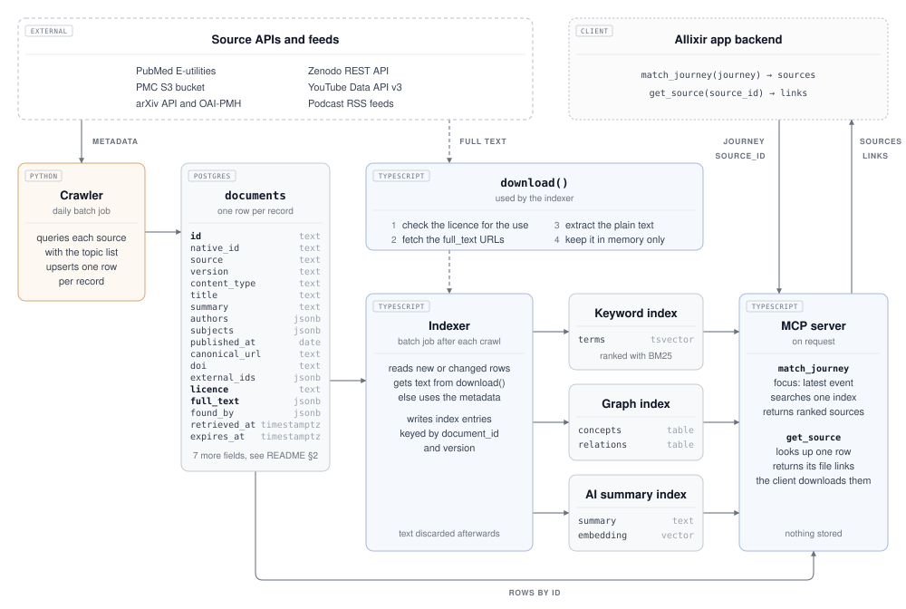
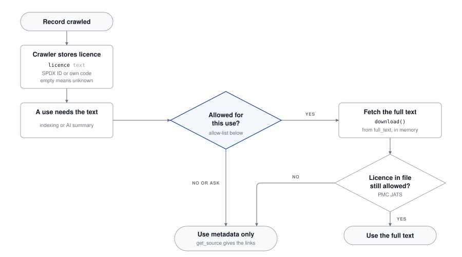

Reference for the next pages: how a source record moves from the source API to an MCP result. Full texts are never stored.

documents stores, so the full source can be fetched later| Purpose | Fields | Used for |
|---|---|---|
| Identity | id = <source>:<native_id>, source, version | Stable across versions; the MCP source_id |
| Matching | content_type, title, authors, venue, summary, subjects, language, published_at | All indexes; the only text when the licence blocks the full source |
| Fetching | licence; full_text locators in fetch order, each with URL, media type, size and checksum | download() checks the licence and fetches without another lookup |
| Traceability | canonical_url, doi, external_ids, found_by, retrieved_at | Every result leads back to its source, query and fetch date |
| Retention | source_updated_at, expires_at | Re-index on change; YouTube rows refreshed or deleted within 30 days |
download() holds them in memory only; podcast show notes are cut to 1,000 characters.document_id and version and are rebuilt when the version changes. Feeds are polled with a conditional GET (ETag, Last-Modified).match_journey returns sources from the indexes; get_source returns the links to the files of one source, and the client downloads them itself.Documentation/sources/README.md §2 and the source pages.1 / 3What each source provides, checked against the live documentation and with live requests on 01.11.2026.
| PubMed | PMC | arXiv | Zenodo | YouTube | Podcasts | |
|---|---|---|---|---|---|---|
| Role | Primary, peer-reviewed journals | Primary, full texts for PubMed | Secondary, preprints, no review | Secondary, grey literature, no review | Complementary, curated channels | Complementary, curated feeds |
| Metadata for matching | ||||||
| Title | n/afrom PubMed | |||||
| Abstract, description | abstract | n/a | abstract | description | description, chapters | show notes, cut to 1,000 chars |
| Authors | n/a | with ORCID | channel | host, rare | ||
| Venue | journal | n/a | journal_ref | channel | show | |
| Subjects | MeSH | n/a | categories | some MeSH | tags | curated topics |
content_type | journal_article, publication types | n/a | preprint | 7 resource types | video | podcast_episode |
| Published date | n/a | |||||
| Duration | n/a | n/a | n/a | videos | ||
| DOI | journal DOI | own DOI | n/a | n/acited in notes | ||
| Versions | concept ID | n/a | n/a | |||
| References | list, elink | n/a | Semantic Scholar | sparse | n/a | n/a |
| Full source | ||||||
| Licence field | see PMC | license_code | OAI-PMH, 1 request per paper | metadata.rights | status.license, not our use | copyright only |
| Full text | via PMCID | JATS XML | HTML, else PDF | files, size, MD5 | transcript in 1 of 6 feeds | |
| Existing connectors | ||||||
SS26 (backend/) | stores PDF text | n/a | stores PDF text | n/a | scrapes captions | n/a |
| #27 (not merged) | no PMCID, pdat filter | n/a | version in ID, no licence | n/a | no status, no refresh job | n/a |
| Size, for context | ||||||
| Scope | 41.4 M citations | about 8 M article versions | about 8,300 a year, medical | 3,241 for prostate AND cancer | 26 curated channels | 6 feeds, 715 h |
yes partly no, or breaks the metadata-only rule n/anot applicable
| Source | Full-text route | Checked before fetching | Request limit | Cap per query | Terms that affect us |
|---|---|---|---|---|---|
| PubMed + PMC | PMC S3 PMC<n>.<v>.xml via the PMCID: JATS XML, 60–275 KB, no login | license_code | 10 requests/s per key, 3 without; 429 above. S3: none published | 9,999 IDs | Name NLM; keep data current or mark it as possibly outdated |
| arXiv | arxiv.org/html/<id>v<n>, else /pdf/; PDF needs a text extractor | licence | API and OAI-PMH: 1 request per 3 s, one connection. Pages: 15 s crawl delay | 30,000 | Personal and research use; no serving of e-prints from our servers |
| Zenodo | File download from the record: PDF, DOCX, PPTX, MP4; up to 50 GB per record | open access, licence, media type, size; MD5 after download | 30 searches/min, also with a token; 133 record and file requests/min | 10,000 | Respect each record's licence; non-military use only |
| YouTube | None: no transcripts or files. Gemini on the video URL is not cleared | – | 10,000 units/day plus 100 search.list calls/day | 500 per channel search | Refresh or delete stored data within 30 days; no view counts in scores; label as YouTube, never merge |
| Podcasts | podcast:transcript (VTT, SRT, HTML), else show notes. Speech-to-text undecided | copyright | None published; one conditional GET per feed and day | – | No feed grants a licence |
Limits apply per key or host and are shared by the crawler and the indexer. Queries above the cap are split by date.
Documentation/sources/<source>.md.2 / 3The matcher is a non-commercial university project for now. Free to read is not the same as licensed, so every full text passes a licence check before use. licence holds an SPDX ID (CC-BY-4.0) or our own code (arxiv-nonexclusive-1.0, pmc-tdm, youtube-standard, all-rights-reserved).

| Licence | Keyword, graph, AI index | AI summary shown to users | Client passes the original on | If used commercially later |
|---|---|---|---|---|
| CC0, CC BY, public domain | yes | yes, with credit | yes, with credit | same |
| CC BY-SA, CC BY-ND | yes | ask | SA: same licence; ND: unchanged only | same |
| NC licences (CC BY-NC, -NC-SA, -NC-ND) | yes | as the licence without NC | as the licence without NC | no |
PMC TDM, arXiv default licence | yes (text mining, research use) | ask | no, link only | ask |
| All rights reserved, unknown | ask | no | no, link only | ask |
Licences differ per record, even inside one source: PMC mixes CC BY and NC in one bucket, 8 % of a Zenodo sample and 16 % of an arXiv sample are NC, about a third of medical arXiv papers carry only arXiv's own licence, and no podcast feed grants one. YouTube's 30-day rule applies whatever status.license says.
Documentation/sources/open-questions.md. Licence details: Documentation/sources/README.md §3.3 / 3